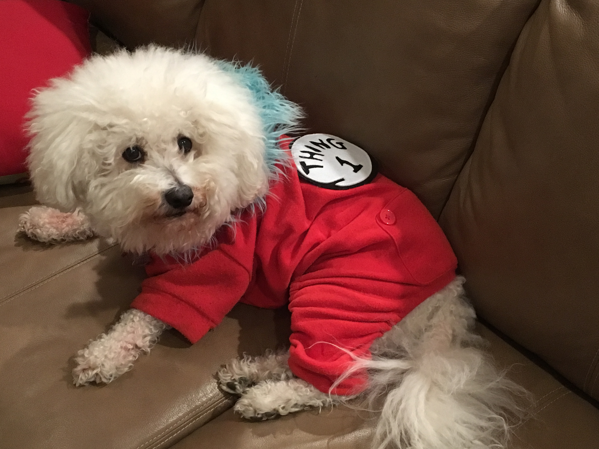
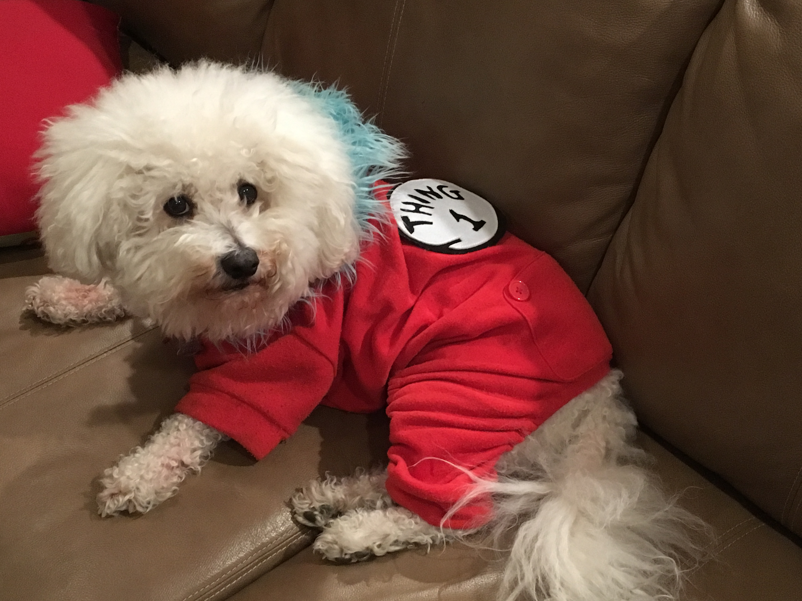

Nicky's Fan Page
 

Nicky is a 10-year-old Bichon Frise who lives in Washington D.C. with his loyal human, Michelle. He was born on January 21, 2009 in Maryland to a Bichon named Daisy. He has lived with Michelle for 10 years. For the first few years of his life he lived in the suburbs in Virginia with a fenced-in backyard and a nice deck. Now he lives in an apartment in the city. He’s become a city dog who enjoys relaxing on the stoop and meeting new dog friends.
Nicky enjoys going for walks, napping, cuddling and playing with his squeaky toys. His favorite treats are chicken or vegetable treats and crunchy biscuits. His favorite "human" foods are carrots, chicken, bell peppers, apples and cheese. He loves to meet new people!
View more pictures of Nicky here: Nicky's Photo Gallery